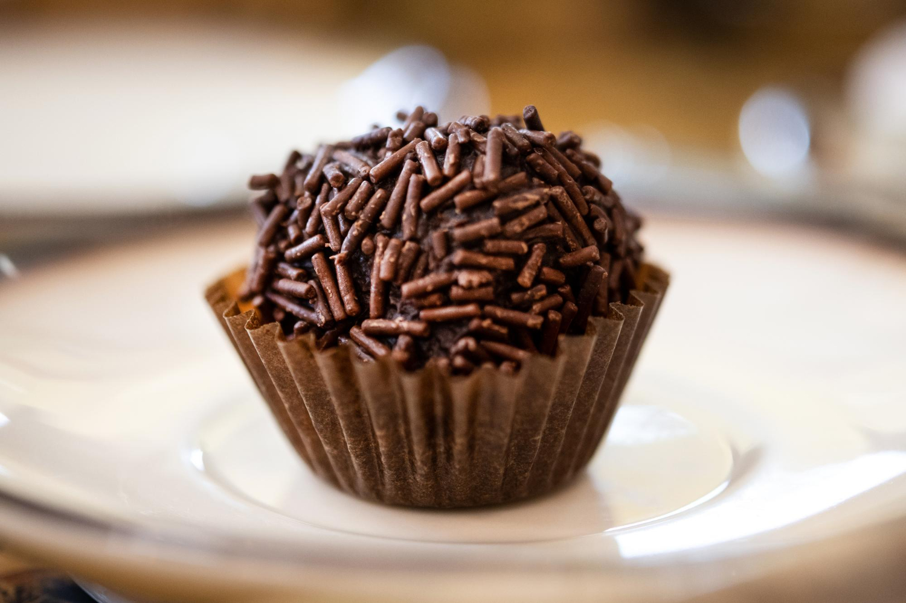

- Em uma panela em fogo médio, coloque a manteiga e o chocolate em pó;
- Mexa bem dissolvendo os dois ingredientes;
- Acrescente o creme de leite e o leite condensado;
- Misture bem os ingredientes até engrossar e ficar no ponto desejado;
- Desligue o fogo e deixe esfriar;
- Enrole os brigadeiros e passe no chocolate granulado. Aproveite!